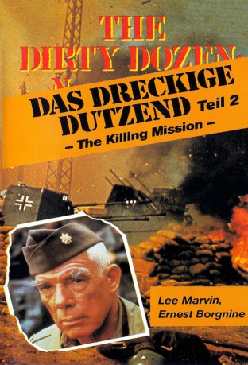

#6605 Das Dreckige Dutzend 2
Alternativ: The Dirty Dozen: Next Mission
 
 IMDB-Wertung: 5.0 / 10
IMDB-Wertung: 5.0 / 10  Metascore: 0
Metascore: 0 
September 1944: Um das schnelle Ende des Krieges herbeizuführen, muß ein Mann getötet werden: Der Nazi-General Dietrich (Wolf Kahler). Unter dem Kommando von Major Reisman (Lee Marvin) begibt sich eine schlagkräftige Truppe von zu Tode verurteilten Verbrechern, genannt "Das dreckige Dutzend" nach Frankreich um den Auftrag, der einem Selbstmord gleichkommt, auszuführen...
Jahr: 1985
Dauer: 91 Minuten
FSK: 16
Land: USA Studio: NBCTonspuren:
Untertitel:
Auflösung: SD (640x368) Größe: 700 MB
Genre: Action, Krieg
Regisseur: Andrew V. McLaglen
Drehbuch: Lukas Heller
Soundtrack:
Darsteller:
 Lee Marvin als Maj. John Reisman
Lee Marvin als Maj. John Reisman Ernest Borgnine als Gen. Worden
Ernest Borgnine als Gen. Worden- Ken Wahl als Louis Valentine
- Larry Wilcox als Tommy Wells
 Sonny Landham als Sam Sixkiller
Sonny Landham als Sam Sixkiller Richard Jaeckel als MP Sgt. Clyde Bowren
Richard Jaeckel als MP Sgt. Clyde Bowren Wolf Kahler als Gen. Sepp Dietrich
Wolf Kahler als Gen. Sepp Dietrich Gavan O'Herlihy als Conrad E. Perkins
Gavan O'Herlihy als Conrad E. Perkins Ricco Ross als Arlen Dregors
Ricco Ross als Arlen Dregors Rolf Saxon als Robert E. Wright
Rolf Saxon als Robert E. Wright Jay Benedict als Didier Le Clair
Jay Benedict als Didier Le Clair Sam Douglas als Anderson
Sam Douglas als Anderson Michael Sheard als Adolf Hitler
Michael Sheard als Adolf Hitler Bruce Boa als Colonel
Bruce Boa als Colonel William Morgan Sheppard als German General
William Morgan Sheppard als German General Derek Lyons als G.I. , uncredited
Derek Lyons als G.I. , uncredited- Stephen Hattersley als Otto Deutsch
- Michael John Paliotti als Baxley
- Paul Herzberg als Reynolds
- Jeff Harding als Sanders
- Russell Sommers als Gary Rosen
- John Malcolm als Field Marshal Meisterlein
- Crispin Denys als Schmidt
- Denis Holmes als Gen. Pierre Fontaine
- Alan Barry als Gen. Bulldog Bardsley
 Don Fellows als Gen. Trent Tucker
Don Fellows als Gen. Trent Tucker- Billy Dean als Nazi Officer
- Mike Kent als German Soldier
- Charles Bodycomb als GI Harley Outrider , uncredited
Datei: X:\4-Tetralogie(A-K)\Dreckige Dutzend\Dreckige Dutzend 2, Das (1985, FSK16, 640x368).avi seit 25.07.2017
Festplatte: HD Collection-3(N-Z)-6(A-Z)
 Es gibt insgesamt 7 Filme in der Gruppe '4-Tetralogie(A-K)\Dreckige Dutzend'
Es gibt insgesamt 7 Filme in der Gruppe '4-Tetralogie(A-K)\Dreckige Dutzend'